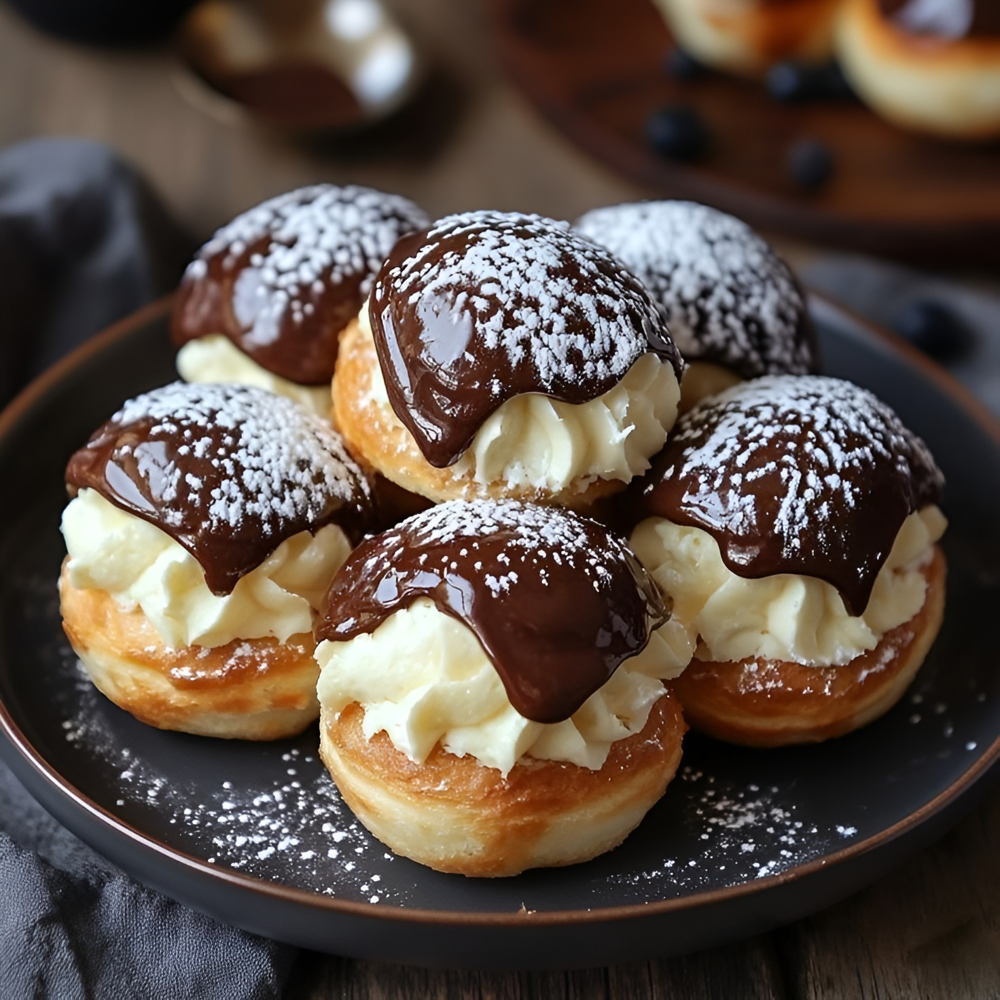

Profiteroles
Los profiteroles son pequeños bocados de masa choux, livianos y huecos por dentro, que se rellenan con crema pastelera, chantilly o helado y se bañan con salsa de chocolate. Su combinación de texturas —suaves por dentro y ligeramente crocantes por fuera— los convierte en un clásico irresistible de la repostería francesa.
Ingredientes
Para la masa
Para la crema
Preparación
Preparación de la crema
- Poner 150 ml de leche en un cuenco apto para microondas. En el mismo sumar 55 gr de azúcar junto con la cascarita de limón (sin la parte blanca), y la rama de canela.
- Llevar a microondas por 2 min. a potencia máxima.
- En otro bowl, colocar las 2 yemas de huevo y reservar a un costado las claras.
- Junto con las yemas sumar 50 ml leche y 20 gr de maizena. Con la ayuda de un batidor de alambre integrar todo hasta unificar.
- Logrado el punto anterior, agregar la leche caliente. Integrar y llevar al microondas por 1 min más a potencia máxima.
- La crema pastelera estará lista cuando esté espesa y homogénea. Deja enfriar antes de usar.
Preparación de los clásicos profiteroles rellenos
- En una olla mediana, calentar el agua, junto con la mantequilla en cubos y sal a fuego medio hasta que la mantequilla se haya derretido.
- Logrado el punto de hervor, agrega la harina de una sola vez y revolver la mezcla con una cuchara de madera hasta que se forme una masa que se despegue de las paredes de la olla.No desesperarse si parece que se corta, continuar revolviendo hasta que se unifique y suceda.
- Logrado el punto anterior, volcar la masa en un bol y agregar los huevos de uno en uno, mezclando bien con batidor después de cada adición. La masa debe quedar suave, lisa y debe caer sola por su propio peso.
- Una vez unificada, colocar la masa en una manga y armar pequeñas bonitas parejas sobre una placa previamente enmantecada.
- Hornear a 180º durante unos 20–25 minutos o hasta que los profiteroles estén hinchados.
- Pasado el tiempo, bajar el fuego a mínimo y cocinar así por unos minutos más hasta dorar.
- Sacar la bandeja del horno y dejar enfriar. Rellenar con la crema y bañar con chocolate si lo desea.
Antes de empezar, precalentar el horno al máximo
Tips
No abras el horno mientras se hornean, así evitás que se desinflen. Una vez fríos, rellenalos justo antes de servir para que no se humedezcan.